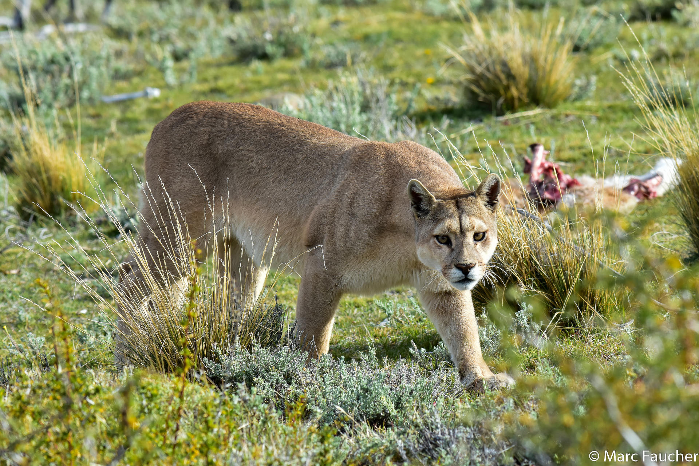

Fauna de Boyacá
Explora la diversidad de animales en la región de Boyacá.

Cóndor Andino (Vultur gryphus)
- Habitat:Montañas y altiplanos andinos.
- Características:Gran envergadura de hasta 3.3 metros que facilita el planeo con mínimo esfuerzo.

Oso Andino (Tremarctos ornatus)
- Habitat:Bosques nublados y montañosos de los Andes.
- Características:Omnívoro con una dieta variada que incluye frutas, plantas e insectos.

Mono Chucuto (Lagothrix lagotricha)
- Habitat:Bosques húmedos tropicales.
- Características:Inteligente y capaz de usar herramientas, formando grandes grupos sociales.

Más información
Puma (Puma concolor)
- Habitat:Variedad de ambientes como montañas, bosques, desiertos y áreas suburbanas.
- Características:Territorial, requiere grandes áreas para cazar.

Venado de Cola Blanca (Odocoileus virginianus)
- Habitat:Bosques, praderas y áreas montañosas.
- Características:Juega un papel crucial en su ecosistema como herbívoro y presa.

Tigrillo Lanudo (Oncifelis colocolo)
- Habitat:Zonas de bosque y montaña con vegetación densa.
- Características:Pequeño tamaño y pelaje que facilita el camuflaje.

Águila Real (Aquila chrysaetos)
- Habitat:Zonas montañosas y abiertas.
- Características:Visión aguda para detectar presas a larga distancia.

Carpintero Real (Colaptes melanochloros)
- Habitat:Bosques y áreas arboladas.
- Características:Fuerte pico para perforar madera en busca de insectos y para anidar.

Rana Marsupial Andina (Gastrotheca riobambae)
- Habitat:Bosques nubosos andinos.
- Características:Cría de embriones en una bolsa dorsal hasta su completo desarrollo.

Serpiente de Cascabel (Crotalus durissus)
- Habitat:Áreas secas y rocosas.
- Características:Cascabel para advertir a depredadores y protegerse.

Colibrí del Sol (Coeligena orina)
- Habitat:Bosques húmedos de montaña.
- Características:Batir de alas rápido para mantenerse estático en el aire mientras se alimenta de néctar.

Búho de Anteojos (Pulsatrix perspicillata)
- Habitat:Bosques densos y selvas tropicales.
- Características:Visión nocturna y audición aguda para cazar en la oscuridad.

Zorro Culpeo (Lycalopex culpaeus)
- Habitat:Montañas y páramos.
- Características:Adaptabilidad a diversos ambientes y dietas.

Tangara Real (Tangara cyanicollis)
- Habitat:Bosques andinos y subandinos.
- Características: Importante para la dispersión de semillas gracias a su dieta frugívora.

Armadillo Andino (Dasypus novemcinctus)
- Habitat:Bosques secos, praderas y sabanas.
- Características:Caparazón protector que permite encerrarse casi completamente cuando se siente amenazado.